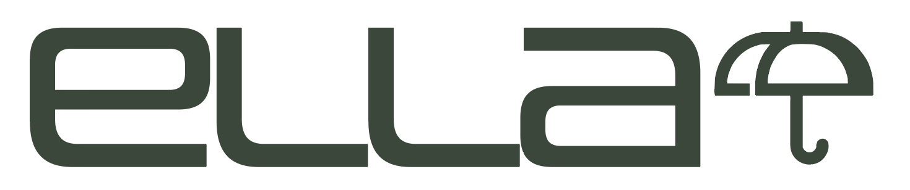

ella surfaces hidden supply, costs the PIP against real work, models the full range of outcomes, and takes the manual entry off your plate — from deal screen to stress-tested pro forma.
Hospitality acquisitions still get underwritten the way they were twenty years ago — by hand, in a spreadsheet, against data that only describes the market you can already see. Five gaps keep showing up.
The result: deals priced on partial information, slowly, with no read on the odds.
An AI underwriting platform that reimagines how hospitality deals get underwritten — from deal screen to stress-tested pro forma.
The hardest-to-copy capability ella offers — and the one that changes the underwrite the most.
ella scans the submarket from public records — planning commission filings, permitting databases, local press — and surfaces what's coming: new supply in the pipeline, supply coming offline, ownership and operator moves, and the regulatory climate.
Every finding is cited and links directly to its source. This is the thing standard benchmarking data structurally cannot do — surfaced today instead of in two years when you're already pushing for stabilization and the keys land next door.
The scan is deal-aware. Ask about the revenue ramp and ella flags the new supply entering in Year 2 that could cap your ADR growth — before you close.
Every step of the underwrite, in one platform — without the spreadsheet.
Standard benchmarking reflects the market today. ella's forward view prices in what's entering in ~2 years — when you're pushing for stabilization.
| Metric | Comp set — today | ella forward view | Gap |
|---|---|---|---|
| Competitive supply (keys) | 847 | 1,109 | +31% |
| Projected ADR at stabilization | $289 | $241 | −17% |
| Occupancy ceiling | 84% | 71% | −13 pp |
| Year 3 RevPAR | $243 | $171 | −30% |
This gap is the risk most hotel underwrites miss entirely.
Built for the buyers who need to move fast and move right — owner-operators, small investment groups, and independent analysts underwriting boutique and independent hotel acquisitions.
Underwriting, reimagined for the way
hotel deals actually move.
From T-12 to stress-tested pro forma — without the spreadsheet.